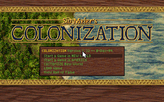
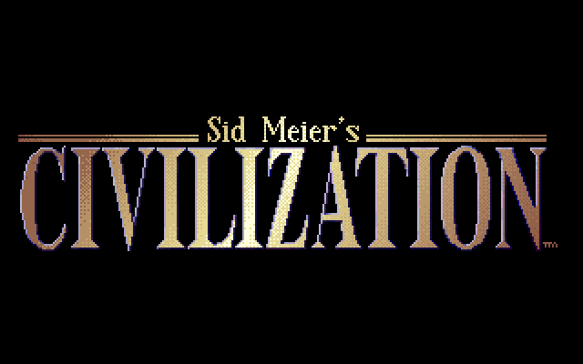
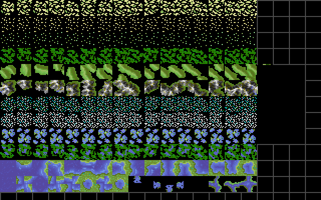
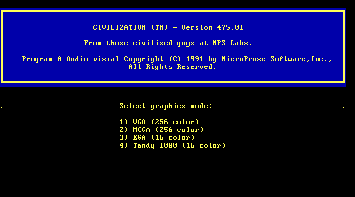

CHAPTER 3 · ART ON DEMAND
ART ON DEMAND
Colonization ships 2,307,349 bytes of compressed art that decompresses to 4,344,422 — 6.6 times the machine's entire 655,360-byte conventional arena. The answer is radical: nothing decompressed exists until the frame it is needed, it is inflated into transient buffers the game manages itself, and almost nothing survives afterwards.
Chapter 4 will show that Colonization's whole simulated world — every unit, colony, tribe and tile — is about 24 KB. The memory problem was never the simulation. It was the presentation: 320×200 screens at 64,000 bytes a frame, sprite sets for eight native nations, an 891-frame opening cutscene, four colonial powers' regalia. Laid out flat, the art is 4.34 MB against a 640 KB arena that also has to hold DOS, the program, and its buffers. So the art pipeline is built on one rule, applied without sentiment: a decompressed asset is a transient, not a possession.
MADSPACK 2.0, anatomised
Of the 287 files in our Colonization install tree (three are later corpus additions),
246 open with the same
13 bytes: the ASCII string MADSPACK 2.0 followed by a DOS end-of-file mark,
0x1A. That is the container format of MicroProse's in-house MADS engine —
206 .ss sprite sets, 35 .pik full-and-part-screen pictures, and
5 .ff fonts. The layout is fixed and frugal:
0x00 "MADSPACK 2.0" 1A 00 14-byte signature
0x0E u16 section count 1–4 observed
0x10 16 × 10-byte slots: { u16 flags, u32 decompressed, u32 compressed }
flags, low byte: 0 = stored · 1 = FAB-compressed
flags, high byte: uninitialised packer memory (see below)
0xB0 section payloads, back to back, each `compressed` bytes longWe verified the flag semantics across every one of the 933 sections in the install: all
793 sections flagged 1 begin with the three-byte magic FAB; all
140 flagged 0 have compressed size equal to decompressed size and no magic.
The totals are exact: 4,344,422 bytes decompressed from 2,307,349 bytes of
payload — a 1.88× ratio — carried in 2,350,804 bytes on disk once you add the
246 fixed 176-byte headers and 159 bytes of trailing rubbish.
The directory always holds 16 slots, but most files use 1–4. The unused slots were
never zeroed: they contain whatever happened to be in the packer tool's heap — visible
x86 code fragments, including 55 8B EC 57 56 (push bp / mov bp,sp
function prologues) inside clos-bkg.pik's header. The flags high byte is the
same kind of garbage: constant within each file, different across files, in all 246 of
246 containers. Every MADSPACK file MicroProse shipped carries a tiny core dump of the
1994 build machine.
.piks decompress to
exactly 64,776 B each; europe.pik does it from 7,011 B on disk (9.2×). Measured from all
287 files of the install, 2026-07-18 analysis.FAB, bit by bit
FAB is MicroProse's own LZ77 variant, and we know its exact semantics from an unusually
good source: ScummVM's MADS engine contains a C port of MicroProse's actual assembly —
pFABcomp.asm by David McKibbin, dated 5 September 1992, from
the "MPS Labs Graphic Library", together with its three decompressor siblings
pFABexp0/1/2.asm. Those same module names appear in the CodeView debug block
that Colonization's opening.exe ships (Chapter 1) — the library on disc and
the library in the binary are one and the same. The stream grammar:
'F' 'A' 'B' DICT 4-byte magic; DICT = log2 window (12 → 4,096 B)
16-bit control words, bits consumed LSB-first; each bit governs one item:
1 → literal: copy one byte from the data stream
0 0 + 2 bits → short match: length 2–5, one offset byte, distance 1–255
0 1 → long match: two bytes = 12-bit offset into the 4,096-byte
window + 4-bit length field (1–15 → length 3–17);
field 0 → an escape byte follows:
0 = EXIT (end of stream) · 1 = NORMALIZE · N≥2 → length N+1 (≤253)Matches are copied byte-by-byte, so a match may overlap the bytes it is writing — distance −1 with length 5 turns one literal into six identical bytes, which is run-length encoding for free. There is no length header anywhere: decompression ends only when the in-stream EXIT marker arrives.
The NORMALIZE control code exists for one reason: real mode. The compressor emits it
after roughly every 40 KB of output (0xA000 bytes in the source) so that a
16-bit decompressor can re-normalise its segment:offset destination pointer
before the offset half overflows — the compressor even tracks "extra paragraphs for
EXPLODE" while packing. A compression format with 8086 segment arithmetic among its
control codes: you could carbon-date this stream from the grammar alone.
We have also watched the shipped decompressor run. Disassembled live under
mddosem, viceroy.exe's FAB routine sits at offset
0466 of the root code segment: a far function taking three far
pointers and returning with RETF 12, no size argument anywhere. Its bit
reservoir is kept in BP and refilled with a carry-flag bridge
(SHR BP,1 / LODSW / RCL / RCR) — the exact 17-bit trick ScummVM reproduces in
C — and its window shift and masks are self-modifying code, written at
run time into CS:045E–0464, bytes that are zero in the file on
disk. The same routine serves double duty: Chapter 1's overlay manager compresses evicted
code pages with FAB into an in-memory cache and re-inflates them on return.
A screen in 29,746 bytes
Here is what the container and the codec buy, on one concrete file. The closing-scene
backdrop clos-bkg.pik is 29,746 bytes on disk and parses to the byte: a
176-byte MADSPACK header, then three FAB sections — 17 bytes that inflate to 8 bytes of
metadata, 28,800 bytes that inflate to the 64,000-byte Mode 13h frame
(2.22×), and a 753-byte section for the 768-byte VGA palette, which barely compresses
because a palette is already near-random. Thirty-three of the 35 .piks carry
a 64,000-byte section and decompress to exactly 64,776 bytes — frame plus palette plus
metadata. The near-empty Atlantic chart europe.pik ships the same
screen in 7,011 bytes; colony.pik gets 23,048 bytes of colony backdrop from
2,857 (8.1×).
Now the part that makes it work in 640 KB: the decompressor itself needs almost no
room. Of the three shipped variants, pFABexp1 (file-to-memory)
runs in a work buffer of about 2 KB — it streams the compressed bytes
through a 2,048-byte read buffer and writes finished pixels straight to their
destination, so a 45 KB compressed screen can inflate through a two-kilobyte keyhole.
The path we actually watched run is the memory-to-memory variant: when Colonization
draws its title, it reads openmenu.pik's 45,855-byte frame section into one
game-managed buffer and FAB-inflates it into a second just 18,752 bytes away — so close
that the output overruns the source while it is still being read, the overlap Chapter 2
dissects — then blits the finished 64,000-byte frame to the screen. Neither buffer is
DOS-allocated: both live at raw addresses in the freed arena, under the game's own
bookkeeping.

Civilization's codec, cracked
Three years earlier, Civilization solved the same problem with a different in-house
codec — and this one we re-implemented from scratch. Every Civ image is a
.PIC: a sequence of tagged blocks, each a two-character ASCII tag plus a
16-bit length. Walking all 106 .PIC and 38 .PAL files in the
install, every single file parses to exactly its end-of-file with one of four tag
patterns:
| Sequence | Files | Meaning |
|---|---|---|
E0 M0 X0 | 96 | EGA dither table + VGA palette + 8-bpp image |
M0 X0 | 43 | palette + 8-bpp image (includes all 38 .PALs, whose image is empty) |
M0 X1 | 4 | palette + 4-bpp image (MAP.PIC, TORCH.PIC, …) |
X1 only | 1 | SPRITES.PIC — borrows an external palette (SP257/SP256) |
The image payload is double-compressed: LZW, then run-length. The LZW
codes are packed LSB-first, starting at 9 bits and growing to a declared maximum — always
11 bits here, a 2,048-entry dictionary (perhaps 6 KB of table RAM at three bytes an
entry; the shipped table layout is not recovered). Code 256 is reserved and never used;
the first dictionary code is 257. There is no clear code: when the dictionary fills, the
decoder silently resets it and drops back to 9-bit codes — and, a detail we pinned by
experiment, the reserved code persists after every reset. Decode with base 257
after reset and all 116 compressed files in the install emerge at exactly the right byte
count; decode with base 256, as one community write-up suggests, and they fail. After LZW
comes an RLE pass keyed on escape byte 0x90: VV 90 CC expands to
CC copies of VV, and 90 00 is a literal 0x90.
Proof by construction: our decoder, written from these rules alone, decodes
106 of 106 .PIC files and 10 of 10 save-game .MAP files with zero errors.
The title screen below is 6,047 bytes on disk for a 64,000-byte frame — 10.6:1, against
FAB's 2.2:1 on similar art, the reward for spending a dictionary on every image. The
.MAP files are the punchline this site keeps returning to: Civ compresses its
world map with the picture codec (Chapter 4).


The oddest block is the cleverest. Civilization's setup menu offers VGA, MCGA, EGA and
Tandy — no CGA (and, matching that, not one CGA C0 block exists in the
install). But EGA has 16 colours and the art is painted in 256. The bridge is the
E0 block: 258 bytes, one byte per palette index, each byte a pair of
4-bit EGA colours that the EGA driver renders as an alternating dither. In BIRTH1.PIC the
16 pure entries read 0x00, 0x11, … 0xFF, and entry 0x86 means "a
checkerboard of EGA colour 8 and colour 6" — dark grey and brown blending, at 320×200 on
a period monitor, into something the eye reads as a ninth-and-a-half colour. Every image
carries its own hand-tuned reduction table: 256-colour art, EGA delivery, zero extra
assets.
Two footnotes complete the family. All 38 .PAL files are 782 bytes with an
identical layout: a full M0 palette block — 256 RGB triplets whose values
never exceed 0x3F, because they are 6-bit VGA DAC values — followed by an
empty X0 stub declaring a 0×0 image. A palette file is just a picture with no
pixels, so one block-walking loader reads both. And the palettes matter more than the
pixels: Civ's famous intro animates almost entirely by rewriting the DAC while the
framebuffer sits still.

Sound the same way
The streaming philosophy is not only visual. coldig.bin, Colonization's
digitised speech and effects, is 993,755 bytes of raw, headerless, unsigned 8-bit
PCM — we verified the format statistically: byte mean 127.0, the distribution
peaked at 0x7F/0x80 silence, 94% of samples within 0x60–0xA0. That single file is one and
a half times the entire conventional-memory arena, so it never loads; it streams. During
the opening cutscene the front-end moves it through the EMS page frame in 61 chunks of
16 KB across 207 INT 67h calls, feeding the Sound Blaster DAC from a window
of bank-switched memory (the Overview's memory map shows the frame).
The players are swappable too. Colonization ships four sound-driver overlays —
asound/gsound/psound/rsound.col, MZ executables of 46,242–48,651 bytes — and
loads exactly one, for the configured device, via DOS EXEC subfunction 4B03; we watched
the game load ASOUND.COL and then shrink its allocation from 31,866 paragraphs to 3,061
(~498 KB of loader headroom down to ~49 KB resident). Every driver exports its API as a
numbered vector table in a shared container format: 16 zero bytes, a 26-byte ID string
with an embedded build date, three size words, then a counted vector list. Sound drivers export 11 vectors, Civ's
video drivers 52 — and the "no sounds please" driver, NSOUND.CVL, is 720 bytes that fill
all 11 slots with two-instruction stubs.
| Game | File | Embedded ID + build date | Vectors |
|---|---|---|---|
| Civ 1991 | ASOUND.CVL | RLND Cvlzatn12-03-91 — AdLib/OPL2, sibling build of the Roland driver | 11 |
| Civ 1991 | ISOUND.CVL | Civil IBM 11-14-91 — PC speaker via PIT channel 2 | 11 |
| Civ 1991 | NSOUND.CVL | CVLZTN NoSnd10-16-91 — 720-byte stub driver | 11 |
| Civ 1991 | MGRAPHIC.EXE | MGRAPHIC.EXE09-19-91 — MCGA/VGA video driver | 52 |
| Civ 1991 | MISC.EXE | MISCOVR.EXE 02-20-89 — dated 1989, two years before the game | 8 |
| Col 1994 | asound.col | ColonizatonA09-14-94NO — Sound Blaster, EMS-aware | 11 |
| Col 1994 | gsound.col | Coloniz GMID09-12-94NO — General MIDI | 11 |
| Col 1994 | rsound.col | RLND Colniz 09/13/94NO — Roland | 11 |
This table is the engine lineage written in bytes. The 1994 drivers use the same
container — same 512-byte MZ header shape, same 0000:0010 entry, same
ID-string offset, same 11-slot table — as the 1991 ones, while the code inside was fully
rebuilt: beyond the format, the old and new AdLib drivers share two bytes of MZ prefix and
not one printable string of six characters or more. And MISC.EXE, still on Civ's disk in
1991, identifies itself as MISCOVR.EXE, built February 1989: MPS Labs
infrastructure carried forward across at least five years of games. What changed is
capability: Colonization's asound.col probes for EMMXXXX0 and names
coldig.bin — the 1994 generation grew EMS-streamed digital audio that 1991
Civilization, which ships no digitised-audio file at all, never had. Civ's music appears to live as
note tables inside the drivers themselves.
Step back and the two pipelines are one idea at two dates. 1991: a dictionary codec with per-image palettes and dither tables, decompressed picture by picture into a machine with no memory to spare. 1994: a faster LZ with segment arithmetic in its control codes, inflating each frame into transient game-managed buffers, with a megabyte of PCM flowing past a 64 KB EMS window. Neither game ever holds its art. The art happens, frame by frame, and is gone.
Sources for this chapter — byte-level: MADSPACK census of all 287 Colonization files, clos-bkg.pik section walk, and a from-scratch LZW+RLE decoder run over the Civ install's full .PIC/.PAL/.MAP set (106/106, 10/10), fresh 2026-07-18 analysis; runtime: live mddosem disassembly of the in-game FAB decompressor and the EMS audio-streaming traces; community: ScummVM's MADS engine (pfab.cpp, a C port of MicroProse's pFABcomp.asm), with PIC-format leads from canadianavenger.io and darkpanda's CivFanatics work — full credits in How We Know.